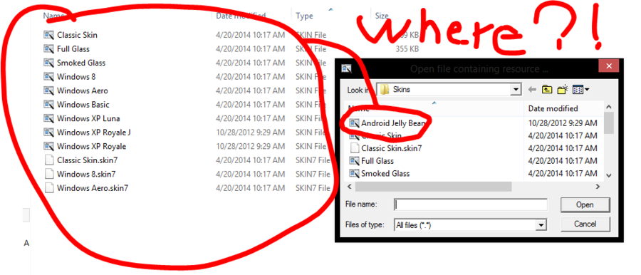
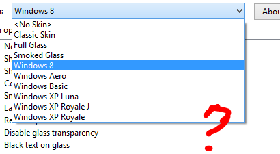

I copied a Windows XP Royale skin and I turned it into an Android JellyBean one.
Code:
; Android JellyBean Skin
; About - text to use in the About box for this skin. use \n for new line
About=Android JellyBean skin\n\nA Classic Shell theme based on Android.\n\nPart of <A HREF="http://classicshell.sourceforge.net/">Classic Shell</A> (c) 2009-2012, Ivo Beltchev\n\nSkin made by Rd.
; AboutIcon - the ID of an icon resource to use in the About box
AboutIcon=1
; Version - version of the required skin engine. Set to 2 if the skin uses any of the new features introduced in Classic Shell 1.9.0 like full glass,
; skinnable sub-menus, skinnable pager buttons, skinnable arrows, etc
Version=2
Variation1=1,"Default - Blue"
Variation2=2,"Mint - Green"
Variation3=3,"Mocha - Light Brown"
Variation4=4,"Raspberry - Pink"
;MAIN BITMAP SECTION - describes the background of the main menu
Main_bitmap=1
Main_opacity=alpha
Main_bitmap_slices_X=10,144,2,2,168,10
Main_bitmap_slices_Y=15,1,8
;MAIN MENU SECTION - describes the menu portion of the main menu
Main_2columns=1
Main_large_icons=1
Main_font="Meiryo UI",normal,-10
Main_background=#000000
Main_text_color=#FFFFFF,#FFFFFF,#7F7F7F,#7F7F7F
Main_selection=#335ea8
Main_padding=4,18,2,9
Main_padding2=3,18,4,9
Main_arrow=4
Main_arrow2=0
Main_separator=11
Main_separator_slices_X=40,92,40
Main_separator2=12
Main_separator_slices_X2=30,74,30
;SUB-MENU SECTION - describes the look of the sub-menus
Submenu_bitmap=3
Submenu_bitmap_slices_X=8,174,2
Submenu_bitmap_slices_Y=2,18,2
Submenu_opacity=region
Submenu_padding=7,2,2,2
Submenu_font="Meiryo UI",normal,-9
Submenu_text_color=#FFFFFF,#FFFFFF,#7F7F7F,#7F7F7F
Submenu_selection=#335ea8
Submenu_offset=5
Submenu_separator=17
Submenu_separator_slices_X=50,75,50
Submenu_separator_text_padding=3,4,4,8
Submenu_separator_font="Segoe UI",italic,-10
Submenu_separator_text_color=#8fb6e3
; Submenu_separatorV - bitmap to use as a vertical separator between multiple columns
Submenu_separatorV=18
Submenu_separator_slices_Y=50,75,50
; OPTIONS
OPTION SMALL_ICONS="Small Icons",0
OPTION LARGE_FONT="Large Font",0
OPTION NO_ICONS="No Icons in Second Column",0
OPTION USER_IMAGE="Show User Picture",1
OPTION USER_NAME="Show User Name",1
OPTION CENTER_NAME="Center User Name",0, USER_NAME, 0
AllPrograms_options=variations
[SMALL_ICONS]
Main_large_icons=0
Main_font="Meiryo UI",normal,-9
Main_arrow=0
[LARGE_FONT]
Main_font="Meiryo UI",normal,-10
Submenu_font="Meiryo UI",normal,-10
[USER_IMAGE]
User_image_size=48
User_frame_position=10,8
User_bitmap=19
User_image_offset=2,2
[USER_IMAGE OR USER_NAME]
Main_bitmap=2
Main_bitmap_slices_Y=66,1,8
Main_padding=4,67,2,9
Main_padding2=3,67,4,9
[USER_NAME]
User_name_position=75,15,-15,55
User_name_align=left
User_font="Meiryo",normal,22
User_text_color=#FFFFFF
User_glow_color=#0C50B1
User_glow_size=2
[USER_NAME AND NOT USER_IMAGE]
User_name_position=15,15,-15,55
[CENTER_NAME]
User_name_align=center
[NO_ICONS]
Main_no_icons2=1
Main_text_padding2=1,7,8,7
[NO_ICONS AND SMALL_ICONS]
Main_text_padding2=1,3,8,4
I made them to their own corresponding theme pallete color. I've restarted Classic Shell, but it dosen't show the theme. Let me take a look for you.

The file is missing, even i enable hidden files.

Can't see theme.
Help! I'm so sad